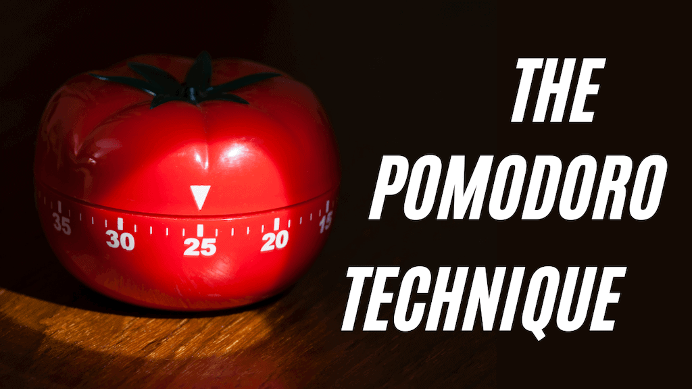

EFS Timer
The Elixir Focus System (EFS) Timer revolutionizes productivity with a seamless fusion of the Pomodoro technique's efficiency and the rejuvenating power of deep work sessions. Crafted to optimize your workflow, EFS Timer operates on a structured cycle: one hour of deep work followed by 15 minutes of rest.
Pomodoro Timer
The Pomodoro Technique is a time management method developed by Francesco Cirillo in the late 1980s. The technique uses a timer to break down work into intervals, traditionally 25 minutes in length, separated by short breaks. These intervals are known as "pomodoros," and the technique is named after the tomato-shaped kitchen timer that Cirillo used as a university student.

FAQs
-
Q: 1. What is the Elixer Focus System (EFS) Timer?
A: The Elixer Focus System (EFS) Timer revolutionizes productivity with a seamless fusion of the Pomodoro technique's efficiency and the rejuvenating power of deep work sessions. Crafted to optimize your workflow, EFS Timer operates on a structured cycle: one hour of deep work followed by 15 minutes of rest.
-
Q: 2. What is the Pomodoro Technique?
A: The Pomodoro Technique is a time management method developed by Francesco Cirillo in the late 1980s. The technique uses a timer to break down work into intervals, traditionally 25 minutes in length, separated by short breaks. These intervals are known as "pomodoros," and the technique is named after the tomato-shaped kitchen timer that Cirillo used as a university student.